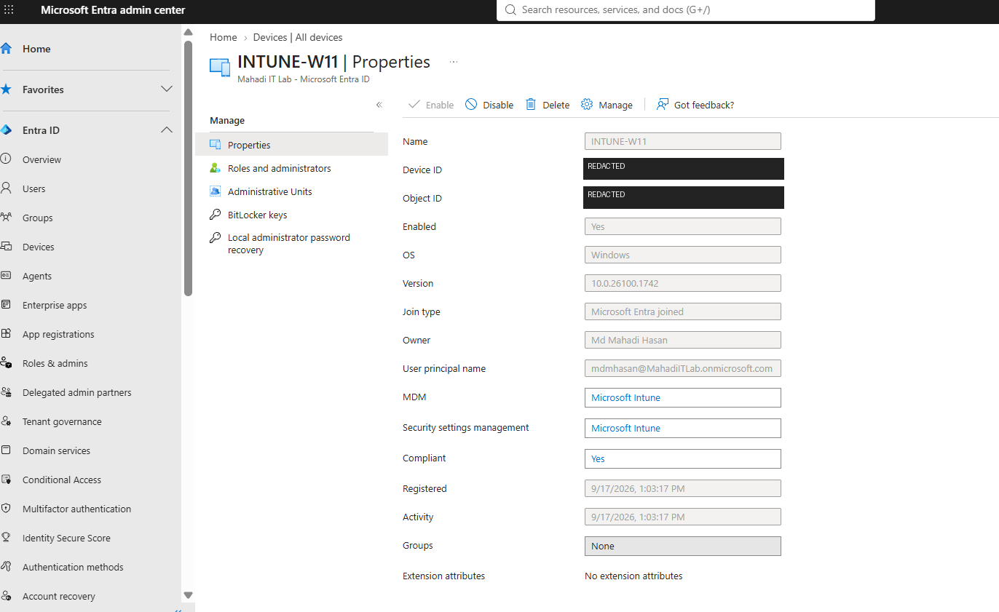
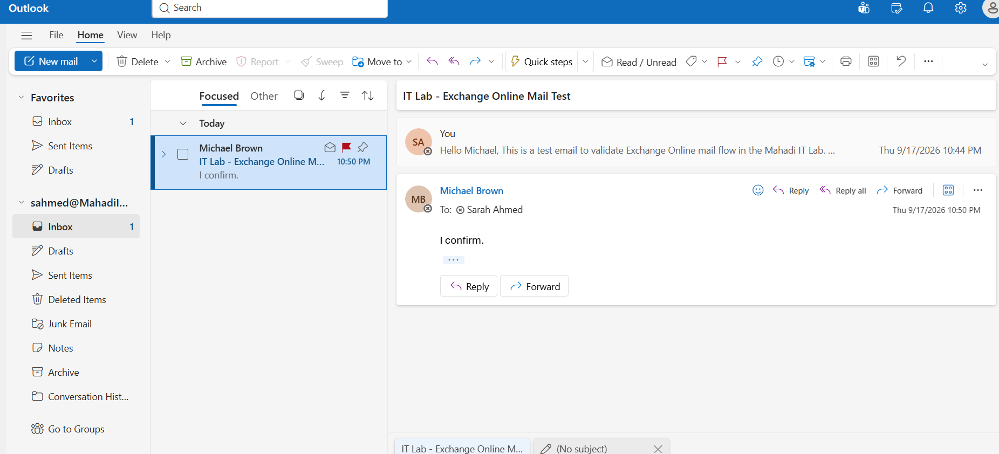
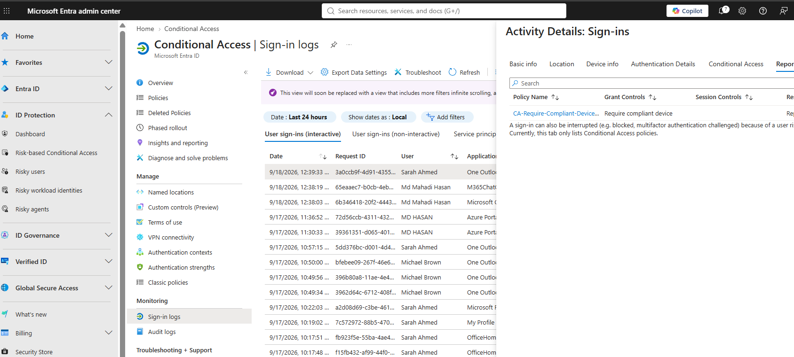

Project Overview
A documented IT Support portfolio demonstrating traditional on-premises administration and modern Microsoft cloud support, with configuration, validation, troubleshooting and screenshot evidence.
Windows Server & Active Directory
- Windows Server 2022 domain controller
- AD DS, DNS and DHCP
- Windows 11 domain join
- OUs, users and security groups
- Group Policy and endpoint security
- NTFS/SMB permissions and RBAC
- Account lockout and Event ID 4625 investigation
- PowerShell helpdesk automation
Microsoft 365, Entra ID & Intune
- Microsoft 365 Business Premium lab tenant
- User, group and licence administration
- Password reset, sign-in logs and session revocation
- Exchange Online mail-flow validation
- Windows 11 Entra Join and Intune enrollment
- Company Portal deployment
- Compliance and endpoint-security policies
- Conditional Access validation in Report-only mode
Microsoft 365 / Entra ID / Intune
Modern workplace administration covering identity, endpoint management and Microsoft 365 Service Desk workflows.



Windows Server & Active Directory
Complete on-premises environment from VM deployment through Active Directory, networking, Group Policy, RBAC, troubleshooting, PowerShell and final validation.
DC01 · Windows Server 2022 · CLIENT01 · Windows 11 Pro · adlab.local · 192.168.10.0/24.Full step-by-step build, commands, observed results and screenshot evidence.Start Here — Complete Lab Navigation
Guided path through the on-premises and cloud project.
Build & Identity
VM infrastructure, AD DS, domain join, OUs, users and security groups.
Network & Security
DNS, DHCP, Group Policy, Defender, firewall and workstation security baseline.
Support & Investigation
File shares, RBAC, account lockout, helpdesk troubleshooting, auditing and Event Viewer.
Automation & Validation
PowerShell administration, reusable helpdesk functions and end-to-end validation.
Troubleshooting Scenarios
DNS Registration
Removed a stale DC NAT address from AD DNS and retained registration on the internal ADLAB interface.
Account Lockout
Diagnosed lockout and bad-password attempts, unlocked the account and confirmed successful sign-in.
RBAC Validation
Confirmed Sales access while HR and IT resources correctly returned access denied.
Security Event Investigation
Enabled logon auditing and investigated a controlled failed authentication using Event ID 4625.
PowerShell Helpdesk Toolkit
Reusable Active Directory support functions packaged in scripts/Helpdesk-AD-Toolkit.ps1.
Get-ADUserHealth
Reviews account health and group membership.
Unlock-HelpdeskUser
Supports a controlled account-unlock workflow.
Get-DepartmentMembers
Retrieves department security-group membership.
Get-FailedPasswordStatus
Supports failed-password and lockout investigation.